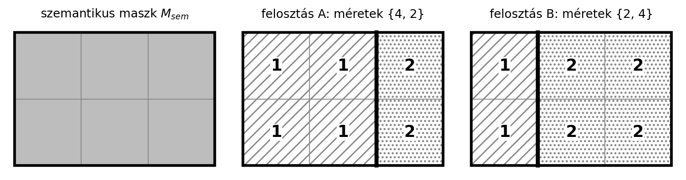
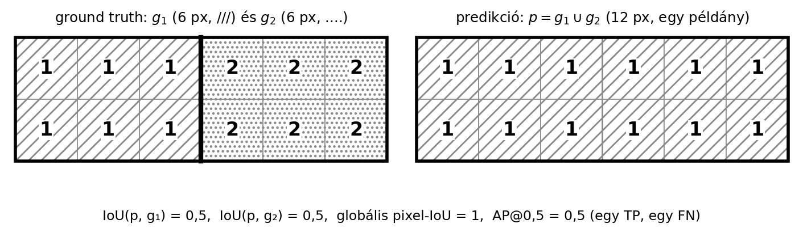

A 27.3. Dice, IoU és aggregálás egységben a szemantikus szegmentálás pixelcímkét adott: minden pixelhez osztályt rendelt, de az azonos osztályú objektumokat nem választotta szét. Itt a kérdés az objektumazonosság külön kezelése: hány különálló példány van, és melyik pixel melyik példányhoz tartozik. Az előismeret a Dice/IoU-metrika, az üres maszk kezelése és az epsilon-stabilizált nevező 27.3. Dice, IoU és aggregálás; a detektálási dobozszerződés, az üres cél és a hibafajták 26.4. Detektálási pipeline és hibaelemzés; továbbá az összesített metrika szeleteket elrejtő hatása 23.4. Hibaszeletek és alkalmazási határ. A 15.4. Független gradiensellenőrzési protokoll alfejezetben bevezetett gradiensellenőrzési szemlélet itt arra figyelmeztet, hogy a maszkküszöb utáni bináris döntés nem sima veszteségfüggvény.
Induló kérdés: egy -es képen 12 előtérpixel hány példányt alkothat? A válasz nem olvasható le a pixelarányból: lehet egyetlen 12 pixeles objektum, de akár 12 különálló 1 pixeles példány is. A példányszám és az előtérpixel-arány tehát különböző célváltozó.
Legyen egy egycsatornás kép, illetve batchelt alakban . A szemantikus annotáció bináris esetben
ahol az előteret jelöli, pedig a hátteret. Többosztályos esetben , ahol a háttér, a szemantikus osztályok. Ez azonban nem tartalmazza, hogy két azonos osztályú, egymástól különálló folt ugyanahhoz az objektumhoz tartozik-e.
Az instance annotáció
ahol a képen lévő példányok száma. Minden példányhoz tartozik:
A kettő kapcsolata:
A példányazonosító (instance id) pusztán címke, nem ordinális mennyiség: az 1 és 2 felcserélése ugyanazt a példányfelosztást jelenti. A példányfelosztás ezért permutáció erejéig értendő, a szemantikus osztály viszont nem felcserélhető.
A hálózati kimenet egy listaszerű, változó hosszú szerződés: minden detektált példányra osztálylogit, doboz, confidence és maszklogit tartozik. A jelen könyv által használt, előtanított súlytól független predikciós séma:
ahol confidence, xyxy doboz, osztály, maszkvalószínűség, pedig a predikált példányok száma. A bináris maszkot a downstream döntés -ös küszöbbel képzi; a veszteség a logiton vagy valószínűségen számol, nem a küszöbölt maszkon.
Kimondjuk a szükséges állítást.
Állítás. Létezik olyan bináris szemantikus maszk , amelyhez legalább két különböző, összefüggő példányfelosztás tartozik, és a két felosztás még az id-permutáció erejéig sem azonos.
Bizonyítás. Tekintsük a következő széles, magas előtérblokkot:
M_sem:
1 1 1
1 1 1Első példányfelosztás:
A_inst^(1):
1 1 2
1 1 2Itt az 1. példány az első két oszlop, a 2. példány a harmadik oszlop. Második példányfelosztás:
A_inst^(2):
1 2 2
1 2 2Itt az 1. példány az első oszlop, a 2. példány a második és harmadik oszlop. Mindkét esetben
tehát ugyanazt a szemantikus maszkot adják. Mindkét id-osztály -szomszédosan összefüggő, mert mindegyik egy-egy tengelyesen összefüggő téglalap. A két felosztás geometriai vágása eltér: az első a második és harmadik oszlop határán vág, a második az első és második oszlop határán. Ez a különbség nem szüntethető meg az id-permutációval: a permutáció csak a címkéket nevezi át, a pixelhalmazok particióját nem változtatja meg. Az első felosztásban a és a pixel ugyanahhoz a példányhoz tartozik, a másodikban különbözőhöz; a példányméretek multihalmaza viszont mindkét esetben , tehát a méretek egyezése önmagában nem teremt ekvivalenciát.
A lemma következménye: a szemantikus maszkból kiinduló pixelosztályozási veszteség önmagában nem definiál egyértelmű instance-célt. Ha a feladat példányokat kér, a tanítóannotációnak példányazonosítót, példánymaszkot vagy példányonkénti dobozt kell tartalmaznia.

A [P15] szerzők által bemutatott Mask R-CNN a Faster R-CNN detektort egészíti ki: a meglévő osztályozó- és dobozregressziós ág mellé párhuzamos maszkágat helyez, amely ROI-nként osztályonként egy-egy bináris példánymaszkot jósol, tehát maszkot, ahol az osztályok száma; a tanítóveszteség csak a ground truth osztályhoz tartozó maszkon számol. Ez a szervezés jól mutatja, hogy az instance-feladat két részből áll: a detektálási fej megmondja, hol van egy objektum, és mi az osztálya, a maszkág pedig megmondja, mely pixel tartozik hozzá.
A detektálási fej közbülső reprezentációja a ROI, azaz region of interest: egy jelölt doboz, amelyből a hálózat a megfelelő jellemzőtér-régiót kivágja. A kivágás diszkrét rácson történik, ezért fontos a koordináták kvantálásának kezelése. A [P15] dolgozat törzse egy RoIAlign nevű, kvantálásmentes réteget vezet be (a részlet nem az absztraktban, hanem a cikk RoIAlign szakaszában van), amely a térbeli pozíciókat pontosabban őrzi meg; ennek pontos bilineáris mintavételezési képletét és a különböző ROI-méretválasztásokat a teljes cikk megfelelő módszerszakaszának olvasása után lehet idézni.
A gyakorlati megvalósításhoz a PyTorch detektálási modelljeinek finetuningját bemutató [D18] tutorial adhat kiindulópontot; a jelen fejezet azonban a szerződés szintjén marad, és a tutorialra implementációs állítást nem épít.
Ez az alfejezet ezért csak a szerződésszintű leírást adja meg. Legyen a bemeneti képbatchenként egy ROI-halmaz . A maszkág minden ROI-ra
maszklogitot vagy normalizált maszkvalószínűséget állít elő, ahol a maszkfej kimeneti felbontása. Az osztályozó ág logitot, a dobozág finomított dobozt ad. A kimeneti példány ezután: osztály, confidence, doboz, küszöbölt és az eredeti képméretre interpolált maszk. A tanító veszteség az osztályozási, doboz- és maszktag összege; a maszktag csak a ground truth osztály maszkján számol, a pontos súlyokat itt nem adjuk meg.
A szemantikus Dice/IoU 27.3. Dice, IoU és aggregálás minden pixelt egyenlően mér, függetlenül attól, hogy hány objektumot vont össze vagy szakított szét. Az instance-metrika ezt a hiányt pótolja. A [P14] U-Net-típusú szemantikus szegmentáló kimenete pontosan olyan maszk, amely példányazonosítót nem tartalmaz, ezért az alábbi példány szintű kiértékelés rá közvetlenül nem alkalmazható. Legyen a ground truth példányhalmaz , a predikció , ahol minden -hez confidence tartozik. Minden -re és -re kiszámítjuk a maszk-IoU-t:
ahol a számláló a közös előtérpixelek száma, a nevező a két maszk uniójának pixelszáma. A nevező sosem nulla, mert csak nem üres maszkokat párosítunk (lásd alább); ezért nincs szükség -ra, amely a szabálynál a küszöbre pontosan eső esetet (, ) hamisan elutasítaná. Az üres maszkok kezelése konvenció kérdése, ezért rögzítjük: üres ground truth példány nincs az annotációban (a háttér nem példány), így csak nem üres példányokat számol; az üres predikált maszkot a matching előtt kihagyjuk, mert nem példányjelölt. Az üres predikció tehát nem lesz TP, de FP-nek sem számítjuk, és TN sem keletkezik, mert a háttér nem példány. Más protokollok az üres predikciót FP-nek számolhatják, ezért a konvenciót a metrika definíciójával együtt kell közölni.
Rögzített IoU-küszöb mellett a predikciókat confidence szerint csökkenő sorrendbe rendezzük, majd greedy, egy-az-egyhez illesztést végzünk: minden predikció a még nem illesztett ground truth példányok közül ahhoz illeszkedik, amellyel a legnagyobb az IoU, ha ez legalább . Az illesztett predikció TP, az illesztetlen predikció FP, az illesztetlen ground truth FN. Az így kapott precision–recall görbe alatti terület az instance average precision, röviden AP. Az AP közvetlenül a példányazonosságot bünteti: egy merge hibánál a predikció csak egy ground truth példányhoz illeszkedhet, a másik FN marad, még akkor is, ha a globális pixel-IoU magas.
Az AP itt rögzített mellett értendő, ezért a jelölése AP@ (például AP@0,5). A precision–recall görbét úgy kapjuk, hogy a predikciókat confidence szerint csökkenő sorrendben végigvesszük, minden lépésnél a kumulatív precisiont és a recallt számoljuk, majd a görbe alatti területet a 26.3. NMS, confidence és AP all-point interpolációjával, a precision monoton nem növekvő burkolójával vesszük. A COCO-stílusú jelentés ezt átlagolja a küszöbökön (ez a szokásos „AP”), és külön közli az AP@0,5 és az AP@0,75 értéket; az osztályok és területi szeletek feletti átlagolás további, itt nem részletezett lépés. A jelen egység példái egyetlen -t használnak, ezért minden AP-érték AP@ értendő.
Kis levezetés. Legyen a ground truth két diszjunkt pixeles maszk, , a predikció pedig az uniójuk: , pixel, confidence . A globális pixel-IoU
Ezzel szemben és , illetve és között az IoU . Ha és a greedy illesztés a szabályt használja, az egyik -t elviszi, a másik FN lesz. Egyetlen predikció és ground truth példány esetén a PR-görbe egyetlen pontból áll: , . Az all-point interpoláció ebből az egyetlen pontból AP-t ad, mert az -hez tartozó precision , a hiányzó recall nem pótolható. Ha a küszöb , akkor egyetlen ground truth példányhoz sem illeszkedik, ezért FP, , , és az AP . Az instance-metrika tehát akkor is hibát jelez, amikor a pixelátlag tökéletesnek látszik.

Előfeltételek. Python 3.12, CPU; a lab/
munkakönyvtárban uv sync-kel telepített környezet (a
uv.lock szerint NumPy 2.3.5 és pandas 2.3.3; a közölt mért
kimenetek a könyv ellenőrző környezetéből, Python 3.12.3 és NumPy 2.5.4
alatt készültek); a futásidőt a futtatás során mért értékként kell
rögzíteni.
A labor célja egy eredeti,
-as
mintán rögzíteni az instance annotáció sémáját, valamint ellenőrizni,
hogy a doboz és az id-maszk konzisztens. Munkakönyvtár:
lab/n108_instance_lab; a kódot
instance_contract.py néven ebbe a mappába mentjük. A kód
nem igényel PyTorch-ot vagy GPU-t; a futási parancs:
cd lab/n108_instance_lab
python instance_contract.pyA szerződés a következő. Bemeneti kép: image alakja
(8, 8), float32,
intenzitás. Target: instance_ids alakja
(8, 8), int64, értéke
háttérre,
példányazonosítóra. bboxes alakja (M, 4),
float32, xyxy sorrend
[xmin, ymin, xmax, ymax], fél-nyílt. labels
alakja (M,), int64. Hálózati kimenet:
boxes, labels, scores,
masks; a maszk (M, H, W) float32,
küszöbölés nélküli valószínűség.
import json
import numpy as np
# Munkakönyvtár: lab/n108_instance_lab
# Futtatás: python instance_contract.py
H, W = 8, 8
image = np.zeros((H, W), dtype=np.float32)
image[1:3, 1:4] = 0.7 # világos előtér, 1. példány
image[5:7, 2:6] = 0.4 # halványabb előtér, 2. példány
instance_ids = np.zeros((H, W), dtype=np.int64)
instance_ids[1:3, 1:4] = 1 # y = 1..2, x = 1..3
instance_ids[5:7, 2:6] = 2 # y = 5..6, x = 2..5
bboxes = np.array([[1.0, 1.0, 4.0, 3.0],
[2.0, 5.0, 6.0, 7.0]], dtype=np.float32)
labels = np.array([1, 1], dtype=np.int64)
# Konzisztencia: minden id legszűkebb doboza egyezik-e a megadott dobozzal.
# Feltétel: a bboxes sorai az id-k növekvő sorrendjében vannak.
present = np.unique(instance_ids[instance_ids > 0])
if len(present) != len(bboxes):
raise ValueError("az id-k és a dobozok száma eltér")
for idx, m in enumerate(present):
ys, xs = np.where(instance_ids == m)
xmin, ymin = xs.min(), ys.min()
xmax, ymax = xs.max() + 1, ys.max() + 1
if (xmin, ymin, xmax, ymax) != tuple(int(v) for v in bboxes[idx]):
raise ValueError(f"{m}. id és doboz nem konzisztens")
semantic = (instance_ids > 0).astype(np.uint8)
expected = {
"input_shape": [H, W],
"instance_count": int(np.unique(instance_ids[instance_ids > 0]).size),
"foreground_pixels": int(semantic.sum()),
"foreground_ratio": float(semantic.mean()),
"bbox_areas": [int((x2 - x1) * (y2 - y1))
for x1, y1, x2, y2 in bboxes.tolist()],
"labels": labels.tolist(),
}
assert expected["instance_count"] == 2
assert expected["foreground_pixels"] == 14
assert abs(expected["foreground_ratio"] - 0.21875) < 1e-12
assert expected["bbox_areas"] == [6, 8]
print(json.dumps(expected, indent=2))Mért kimenet (Python 3.12.3, NumPy 2.5.4, CPU; a példa determinisztikus):
{
"input_shape": [
8,
8
],
"instance_count": 2,
"foreground_pixels": 14,
"foreground_ratio": 0.21875,
"bbox_areas": [
6,
8
],
"labels": [
1,
1
]
}A kimenet a fenti mátrixokból számolt értékeket adja:
foreground_pixels=14,
foreground_ratio=0.21875, instance_count=2, a
dobozterületek
és
.
Az asszertek a futás során ellenőrzik ezeket az értékeket; a numerikus
egyezés int-re pontos.
F1 (fogalmi, nehézség 1). Adjon három, egymástól eltérő tulajdonságot, amelyben a szemantikus és az instance szegmentálás szerződése különbözik. Átadandó: egy-egy rövid mondat és egy legalább -es ellenpélda, ahol ugyanaz a pixelcímke két különböző példányszámot enged meg.
F2 (levezetési, nehézség 2). Adjon -es bináris szemantikus maszkot és hozzá legalább három különböző, összefüggő instance-felosztást. Igazolja mindháromra az egyenlőséget, és mutassa meg, hogy a felosztások nem vihetők egymásba pusztán id-permutációval. Átadandó: három id-mátrix, a permutáció-érv magyarázata.
F3 (implementációs, nehézség 2). Írjon függvényt
instance_to_semantic_and_bboxes(ids) néven, amely egy
(H, W) int64 id-mátrixból előállítja a bináris
szemantikus maszkot (uint8) és példányonként a legszűkebb
xyxy dobozokat (M, 4) float32 tömbben. Kezelje
az üres képet: ekkor a doboz alakja (0, 4) legyen.
Ellenőrizze a labor
-as
mintáján és üres bemeneten. Átadandó: futtatható függvény, hívás, várt
és kapott shape.
F4 (hibakeresési, nehézség 2). Az alábbi hibás függvény „instance AP”-nek nevezi az összes predikció–ground-truth pár IoU-jának átlagát, matching nélkül:
def iou(p, g):
p = np.asarray(p) > 0.5
g = np.asarray(g) > 0.5
union = np.logical_or(p, g).sum()
return float(np.logical_and(p, g).sum() / union) if union else 0.0
def wrong_instance_ap(preds, gts):
vals = []
for p in preds:
for g in gts:
vals.append(iou(p, g))
return float(np.mean(vals)) if vals else 0.0Az iou az „Instance-metrika” szakasz maszk-IoU-ja, a
esetre itt
értékkel. Mutassa meg a merge-példán
(,
),
hogy ez elfedi az FN-t. Adja meg a helyes greedy, egy-az-egyhez
illesztés lényegét, és írja át a függvényt. Átadandó: a hiba oka, a
hibás érték, a javított kód és a küszöb szerepe.
F5 (kísérlettervezési, nehézség 3). A függelék A. A GlyphLab adatkészlet szakaszában leírt GlyphLab jelenleg osztályozási annotáció, nem instance target. Tervezzen protokollt olyan kétértelmű esetre, ahol két, azonos osztályú, egymással érintkező alakzatot kell külön példányként címkézni. Rögzítse a megfigyelési egységet, az annotációs szabályt, a splitegységet, a metrikát és a baseline-t. Átadandó: egy protokollterv, benne a következtetés érvényességi korlátja, például hogy a szintetikus adat nem klinikai validáció.
A protokoll rögzítse a hipotézist, a változó tényezőt, a kontrollt, a metrika mértékegységét, a seedeket, az erőforrásigényt és a számokkal megadott döntési szabályt; ha a terv tanítást is tartalmaz, az architektúrát, az optimizert, a tanulási rátát és az epochszámot is.
F1. A három különbség: (1) a szemantikus kimenet osztálycímke pixelenként, az instance kimenet példányazonosító; (2) a szemantikus kiértékelés pixel-IoU/Dice, az instance kiértékelés példányszintű maszk-IoU matching; (3) a szemantikus cél fix tensor, az instance cél változó példányszámú, ezért listaszerű szerződést igényel. Példányszámra: egy -es, végig előtér maszk lehet egyetlen -es példány (példányszám ), de címkézhető két -es példányként is (példányszám ); az egyenlőség mindkét esetben teljesül, tehát ugyanaz a pixelcímke két különböző példányszámot enged meg.
F2. -es szemantikus előtér:
1 1 0 0
1 1 0 0
0 0 0 0
0 0 0 0Három felosztás:
A1: A2: A3:
1 1 0 0 1 2 0 0 1 1 0 0
1 1 0 0 1 2 0 0 2 2 0 0
0 0 0 0 0 0 0 0 0 0 0 0
0 0 0 0 0 0 0 0 0 0 0 0Az egyetlen példány, két függőleges sáv, két vízszintes sáv. Mindháromnál . -t és -t id-permutáció sem viheti egymásba: a permutáció csak a címkéket nevezi át, a pixelhalmazok particióját nem. Mindkét felosztásban két 2 pixeles példány van (a méretek multihalmaza ), de -ben a példányok oszlopok, -ban sorok: a és pixel -ben különböző, -ban azonos példányba tartozik. A méretek egyezése tehát nem teremt permutációs ekvivalenciát. Továbbá példányszáma egy, míg a többieké kettő, ami definíció szerint nem permutáció.
F3. A függvény:
import numpy as np
def instance_to_semantic_and_bboxes(ids):
if ids.dtype != np.int64:
raise TypeError("ids legyen int64")
semantic = (ids > 0).astype(np.uint8)
rows = []
for m in np.unique(ids[ids > 0]):
ys, xs = np.where(ids == m)
xmin, ymin = xs.min(), ys.min()
xmax, ymax = xs.max() + 1, ys.max() + 1
rows.append([xmin, ymin, xmax, ymax])
bboxes = np.asarray(rows, dtype=np.float32).reshape(-1, 4)
return semantic, bboxesA labor mintáján semantic.sum()==14,
bboxes.shape==(2,4), a dobozok dtype-ja
float32. Üres bemenetre
np.unique(np.array([], dtype=np.int64)) üres, a ciklus nem
fut le, az np.asarray([], dtype=np.float32).reshape(-1, 4)
alakja (0,4), semantic.sum()==0. A dobozok
egész pixelhatárokból származnak, ezért egzakt egyezés várható;
lebegőpontos tolerancia nem szükséges.
F4. A hiba oka, hogy a függvény minden predikció–GT párt átlagol, ezért nincs egy-az-egyhez illesztés, és egy predikció több ground truth példányhoz is hozzájárulhat. A merge-példán: , , az IoU-k , a hibás érték . A helyes érték a küszöbtől függ: és a illesztési szabály mellett a predikció az egyik példányhoz illeszkedik, a másik FN marad, így az AP (ezt mutatta az „Instance-metrika” szakasz „Kis levezetés” bekezdése); mellett a predikció egyik példányhoz sem illeszkedik, ezért FP, és az AP . A küszöböt tehát rögzíteni kell, különben a „javított kód -t ad” állítás csak a esetre igaz.
A javított függvény a 26.3. NMS, confidence és AP all-point AP-ját használja:
def instance_ap(preds, scores, gts, tau=0.5):
order = np.argsort(scores)[::-1]
matched = np.zeros(len(gts), dtype=bool)
tp, fp = [], []
for i in order:
best_j, best_iou = -1, -1.0
for j, g in enumerate(gts):
if matched[j]:
continue
v = iou(preds[i], g)
if v > best_iou:
best_j, best_iou = j, v
if best_iou >= tau:
matched[best_j] = True
tp.append(1); fp.append(0)
else:
tp.append(0); fp.append(1)
tp = np.cumsum(np.array(tp, dtype=np.float64))
fp = np.cumsum(np.array(fp, dtype=np.float64))
if tp.size == 0 or len(gts) == 0:
return 0.0
recall = tp / len(gts)
precision = tp / np.maximum(tp + fp, 1e-12)
mrec = np.concatenate(([0.0], recall, [1.0]))
mpre = np.concatenate(([0.0], precision, [0.0]))
for k in range(mpre.size - 2, -1, -1):
mpre[k] = max(mpre[k], mpre[k + 1])
idx = np.where(mrec[1:] != mrec[:-1])[0]
return float(np.sum((mrec[idx + 1] - mrec[idx]) * mpre[idx + 1]))Ellenőrzés (a fenti mátrixokkal futtatva): a merge-példán
mellett az AP
,
mellett
;
két különálló, jól illeszkedő predikciónál az AP
.
A hibás wrong_instance_ap mindhárom esetben
-öt
ad, tehát sem a
hatását, sem az FN-t nem látja.
F5. Egy lehetséges protokoll: két érintkező, azonos
osztályú négyzetet generálunk
-es
képen, a két
-as
négyzet egy élen érintkezik (nincs átfedés és nincs külön sáv). A
megfigyelési egység a scene_id; ugyanaz a scene minden
nézete azonos splitbe kerül. Az annotációs szabály: minden előtérpixel
pontosan egy négyzethez tartozik, a példányhatár a közös él; háttér csak
a két négyzet unióján kívül van. (Átfedő változatnál a közös pixeleket a
rajzolási sorrendben későbbi négyzethez rendeljük.) A hozzárendelést a
generátor ismert instance id-jából származtatjuk, nem emberi rajzból. A
metrika instance AP
maszk-IoU-val. A baseline a [P14]-típusú U-Net szemantikus kimenetének
küszöbölése, majd a csatlakozó komponensek példányjelöltként való
kezelése; két érintkező példány esetén ez egyetlen komponenst ad, ezért
legfeljebb az egyik GT-hez párosítható, és így az AP felülről legfeljebb
lehet (ennél kisebb, ha a párosított jelölt IoU-ja nem éri el a
-t).
A pontos értéket a kísérlet méri; a hipotézis az, hogy a merge csökkenti
az AP-t, de ezt a mért AP-különbség és a jelenetszintű bootstrap CI
dönti el. A split 120/30/30 scene; mivel a szintetikus feladatban
egyetlen osztály szerepel, osztály szerinti rétegzés (class-stratified
split) nem értelmezhető, ezért a split egyszerű, jelenetszintű véletlen
felosztás. Érvényességi korlát: a szintetikus geometria szabályos, ezért
az eredmény nem terjeszthető ki természetes, takart vagy átfedő
objektumokra vagy magas tétű alkalmazásra; a cél a mérőszám
érzékenységének bemutatása.
Rögzített elemek. Seedek:
–
(generátor és tanítás); a modellek AdamW-vel, lr=1e-3,
batch 32, 30 epoch tanulnak. Döntési szabály: az instance-tudatos modell
akkor jobb az U-Net-alapú baseline-nál, ha az AP@0,5 jelenetszintű páros
bootstrap 95%-os CI-je
()
kizárja a 0-t és a különbség legalább 0,05; különben nem állítunk
különbséget. Erőforrás: CPU, float32, 3 seed × 2 modell = 6
futás, néhány perc (becslés, nem mért).
A példányszám és az előtérpixel-arány nem felcserélhető target. Legyen a -as képen egyszer , egyetlen -as folt: az előtérarány . Máskor hat darab pixeles folt, amelyek páronként nem 4-szomszédosak (tehát nem érintkeznek): a példányszám , az előtérarány ugyancsak . Ha a modell a foreground arányt regresszálja, vagy a veszteség csak a szemantikus maszkot bünteti, akkor nem tudja a két annotációt megkülönböztetni. Az instance-feladat tehát külön célfejet és külön metrikát igényel; a pixelarány legfeljebb az előtér mennyiségét írja le, a példányok számát nem.
Ellenőrző kérdések: meg tudja-e adni a és felosztást úgy, hogy minden id-osztály összefüggő legyen? A doboz fél-nyílt értelmezését használja-e a labor? Az üres predikció TP-ként van-e kezelve az instance AP-ben? A 27.3. Dice, IoU és aggregálás alfejezetből visszahívás: a globális Dice/IoU nem példányszintű; az üres-üres esetet explicit szabálynak kell rögzítenie. A 26.4. Detektálási pipeline és hibaelemzés alfejezetből: az üres cél állapot, és a doboztranszformáció a képpel szinkronban történik. A 23.4. Hibaszeletek és alkalmazási határ alfejezetből: az összesített metrika elrejtheti a merge hibát. A 15.4. Független gradiensellenőrzési protokoll alfejezetből: a maszkküszöb nem sima művelet, ezért a veszteséget a logiton számoljuk, a küszöb csak kiértékelési döntés.
Válaszkulcs. A és felosztás megadható úgy, hogy minden id-osztály összefüggő legyen. A labor a fél-nyílt xyxy értelmezést használja. Az üres predikció nem TP: a matching előtt kihagyjuk, FP-nek és TN-nek sem számítjuk, ezért a konvenciót a metrika definíciójával együtt kell közölni. A globális Dice/IoU valóban nem példányszintű, ezért az instance-feladat külön egy-az-egyhez illesztést és üres-egyezményt igényel.
A szemantikus szegmentálás minden pixelhez osztálycímkét rendel, az instance szegmentálás ezen túl az azonos osztályú objektumokat is külön példányokra bontja. Megmutattuk, hogy ugyanaz a bináris szemantikus maszk több különböző, összefüggő instance-felosztást enged, ezért az instance-annotáció nem vezethető le a pixelcímkéből. A Mask R-CNN a detektálási fej ROI-it párhuzamos maszkággal egészíti ki. Az instance AP a predikciókat greedy, egy-az-egyhez maszk-IoU-küszöbbel illeszti a ground truth-hoz; a merge hiba magas pixel-IoU mellett is elrejtőzhet. A labor kétobjektumos annotációs mintát és input/output szerződést ad, üres cél kezelésével.
A 28.1. Embedding, távolság és normalizálás egység a metrikus tanulásba lép: az instance-azonosság itt bevezetett gondolata ahhoz kapcsolódik, hogyan lehet példányok közötti távolságot reprezentációból tanulni, ha pixelmaszk nem áll rendelkezésre.